정보통신기사(구) (2018-03-10 기출문제)
1과목: 디지털 전자회로
1. 60[Hz] 정현파 신호가 전파정류기에 입력될 경우 출력신호의 주파수는?
- 0[Hz]
- 30[Hz]
- 60[Hz]
- 120[Hz]
(정답률: 83%)

2. 다음 중 스위칭 정전압 회로에 대한 설명으로 틀린 것은?
- 높은 효율을 갖는다.
- 제어소자의 스위칭 동작으로 대부분의 시간이 포화와 차단으로 동작한다.
- 고역통과필터를 사용한다.
- 펄스폭 변조기를 사용한다.
(정답률: 65%)
3. 베이스 접지 증폭회로에서 차단주파수가 50[MHz]인 트랜지스터를 이미터 접지로 했을 때의 차단주파수는 얼마인가? (단, β=99라 한다.)
- 100[kHz]
- 300[kHz]
- 500[kHz]
- 700[kHz]
(정답률: 70%)
4. 다음과 같은 궤환 증폭회로(부궤환)의 궤환 증폭도(Ar)는?
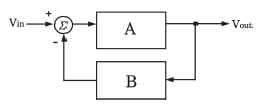
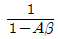
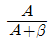
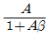
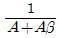
(정답률: 78%)
5. 어떤 차동증폭기의 차동이득이 1,000이고 동상이득이 0.1일 때, 이 증폭기의 동상신호제거비(CMRR) 값은?
- 10
- 100
- 1,000
- 10,000
(정답률: 72%)
6. 다음 회로의 종류는?
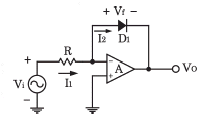
- 반파정류회로
- 전파정류회로
- 피크검출기
- 대수 증폭기회로
(정답률: 61%)
7. 증폭기와 정궤환 회로를 이용한 발진회로에서 증폭기의 이득을 A, 궤환율을 β라고 할 때, βA ＞ 1이면 출력되는 파형은 어떤 현상이 발생하는가?
- 출력되는 파형의 진동이 서서히 사라진다.
- 출력되는 파형은 진폭에 클리핑이 일어난다.
- 지속적으로 안정적인 파형이 발생한다.
- 출력되는 파형은 서서히 진폭이 작아진다.
(정답률: 78%)
8. 다음 중 온도 특성이 좋고, 전원이나 부하의 변동에 대하여 비교적 안정도가 좋기 때문에 안정한 주파수의 발생원으로 많이 쓰이는 발진 회로는?
- 빈 브리지형 발진회로
- 수정 발진회로
- RC 발진회로
- 이상형 발진회로
(정답률: 77%)
9. FM 변조에서 최대 주파수 편이가 80[kHz]일 때 주파수 변조파의 대역폭은 약 얼마인가?
- 40[kHz]
- 60[kHz]
- 80[kHz]
- 160[kHz]
(정답률: 81%)
10. FM 검파 방식 중 주파수 변화에 의한 전압 제어 발진기의 제어신호를 이용하여 복조하는 방식은?
- 계수형 검파기
- PLL형 검파기
- 포스터-실리 검파기
- 비 검파기
(정답률: 80%)
11. 다음 중 주파수 변조에 대한 설명으로 틀린 것은?
- 협대역 FM과 광대역 FM방식이 있다.
- 변조신호에 따라 반송파의 주파수를 변화시킨다.
- 선형 변조방식이다.
- 반송파로는 cos 함수 또는 sin 함수와 같은 연속함수를 사용한다.
(정답률: 78%)
12. 다음 중 아날로그 신호를 디지털 신호로 변환할 때 양자화 잡음의 경감 대책이 아닌 것은?
- 압신기를 사용한다.
- 양자화 스텝수를 감소시킨다.
- 양자화 비트수를 증가시킨다.
- 비선형화 한다.
(정답률: 72%)
13. 다음 중 구형파를 발생시키는 발진기는?
- 수정발진기
- 멀티바이브레이터
- 플레이트동조발진기
- 다이네트론발진기
(정답률: 79%)
14. 다음 회로에서 Vi ＞ VB일 때, 회로의 출력 파형은 어느 것인가? (단, 다이오드의 VT 값은 무시한다.)
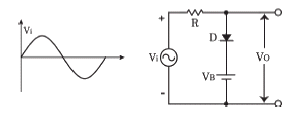
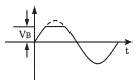
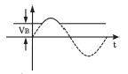
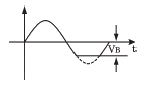
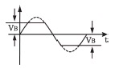
(정답률: 77%)
15. 다음 회로에서 VCC=5[V]일 때 출력 전압은? (단, A=5[V], B=0[V], 다이오드의 VT=0[V]이다.)
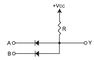
- 0[V]
- 2.5[V]
- 5[V]
- 7.5[V]
(정답률: 71%)
16. 다음 그림의 논리 회로에 대한 논리식은?
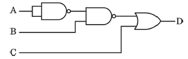
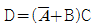
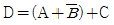
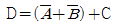
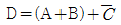
(정답률: 78%)
17. 그림의 회로에서 A=B=0이면 X1과 X2의 값은 각각 얼마인가?
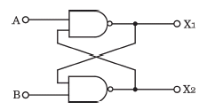
- X1 = 0, X2 = 0
- X1 = 0, X2 = 1
- X1 = 1, X2 = 0
- X1 = 1, X2 = 1
(정답률: 77%)
18. 플립플롭 6개로 구성된 계수기가 가질 수 있는 최대 2진 상태수는?
- 16개
- 32개
- 64개
- 85개
(정답률: 84%)
19. 다음 중 전가산기(Full Adder)를 정확히 설명한 것은?
- 자리올림을 더하여 그 자리의 2진수의 덧셈을 완전히 하는 회로이다.
- 아랫자리의 자리올림을 더하여 홀수의 덧셈을 하는 회로이다.
- 아랫자리의 자리올림을 더하여 짝수의 덧셈을 하는 회로이다.
- 자리올림을 무시하고 일반 계산과 같이 덧셈하는 회로이다.
(정답률: 83%)
20. 다음 중 특정 비트의 값을 무조건 0으로 바꾸는 연산은?
- XOR 연산
- 선택적-세트(Selective-Set) 연산
- 선택적-보수(Selective-Complement) 연산
- 마스크(Mask) 연산
(정답률: 80%)
2과목: 정보통신 시스템
21. 아날로그 전송 회선에서 BPSK 변조방식을 사용하여 4,800[bps]의 전송속도로 데이터를 전송하려 할 때 필요한 주파수대역폭은?(단, 잡음이 없는 채널일 경우)
- 1,200[Hz]
- 2,400[Hz]
- 4,800[Hz]
- 9,600[Hz]
(정답률: 70%)
22. 핀테크(FinTech)란 금융(Finance)과 기술(Technology)의 합성어로, 금융과 IT의 융합을 통한 금융서비스 및 산업의 변화를 통칭한다. 다음 중 핀테크의 일반적인 구성 범위가 아닌 것은?
- 지급결제
- 금융데이터 분석
- 금융 소프트웨어
- 마그네틱 결제
(정답률: 80%)
23. 다음 중 버스형 통신망 구조에 대한 설명으로 틀린 것은?
- 인접한 단말기들을 케이블로 연결하여 길을 트기만 하면, 네트워크로 연결할 수 있다.
- 버스의 전기적 특성 때문에 버스 네트워크의 모든 요소가 전체 네트워크에 영향을 줄 가능성이 있지만 설치가 매우 효율적이다.
- 메시형 통신망보다 케이블 사용량이 적다.
- 잡음을 내보내는 불량 스테이션이 있어도 전체 버스에 영향이 없다.
(정답률: 80%)
24. 70개의 노드를 망형으로 연결할 때 필요한 회선 수는?
- 780
- 1,225
- 2,415
- 3,160
(정답률: 91%)
25. 프로토콜의 구성요소 중 “통신할 데이터의 형식”이란 의미로 코딩, 신호레벨 등을 정의하며 통신에서 전달되는 자료의 구조를 정의하는 것은?
- 의미(Semantics)
- 구문(Syntax)
- 타이밍(Timing)
- 포맷(Format)
(정답률: 78%)
26. 다음 중 대등-대-대등(pear-to-pear) 프로세스에 대한 설명으로 가장 적절한 것은?
- 통신장치 간에 통신할 때 해당계층에서 통신하는 각 장치의 프로세스
- 하나의 장치에서 각 계층이 바로 아래 계층의 서비스를 이용하는 프로세스
- 인접한 계층 사이의 인터페이스를 통해 전달되는 프로세스
- 임의의 두 통신장치 간에 자신의 구조에 상관없이 서로 통신할 수 있도록 해 주는 프로세스
(정답률: 80%)
27. SSL(Secure Socket Layer)은 사이버 공간에서 전달되는 정보의 안전한 거래를 보장하기 위해 넷스케이프사가 정한 인터넷 통신규약 프로토콜을 말한다. 다음 OSI 7 계층 중 SSL이 동작하는 계층은?
- 물리계층
- 데이터링크계층
- 네트워크계층
- 전송계층
(정답률: 69%)
28. 전자우편이나 파일전송과 같은 사용자 서비스를 제공하는 계층은?
- 물리계층
- 데이터링크계층
- 표현계층
- 응용계층
(정답률: 84%)
29. 데이터에 통신국의 주소, 에러 검출 부호, 프로토콜 제어 등의 제어 정보인 헤더(Header)를 부착하는 기능은?
- 흐름제어
- 주소지정
- 다중화
- 캡슐화
(정답률: 87%)
30. 통신 중에 교환기의 스위치가 닫히게 되어 송신자와 수신자 사이에 물리적인 회선이 만들어지며 전화나 TV같은 연속적인 정보를 전송하는데 사용되는 교환방식은?
- 회선 교환
- 패킷 교환
- 메시지 교환
- 데이터그램 교환
(정답률: 86%)
31. BISDN에 요구되는 다양한 기능을 수행하기 위하여 프로토콜 기준모형(PRM : Protocol Reference Model)을 채택한다. 다음 중 BISDN PRM내 ATM 계층의 기능이 아닌 것은?
- 일반흐름제어
- 전송프레임 발생 및 복원 기능
- 셀 VPI/VCI 번역 기능
- 셀 헤더 발생 및 추출기능
(정답률: 54%)
32. 다음 중 CSMA/CD 방식에 관한 특징으로 옳지 않은 것은?
- 데이터 전송이 필요할 때 임의로 채널을 할당하는 랜덤할당방식이다.
- 버스 구조에 이용될 수 있다.
- 노드수가 많고, 데이터 전송량이 많을수록 안정적이고 효율적으로 전송이 가능하다.
- 채널로 전송된 프레임은 모든 노드에서 수신이 가능하다.
(정답률: 80%)
33. 다음 중 도메인 네임(Domain Name)에 대한 설명으로 잘못된 것은?
- IP 주소 대신 쉽게 기억할 수 있고, 이용도 쉽게 할 수 있도록 이름을 부여한 것이다.
- 소속 기관이나 국가에 따라서 계층적으로 형성되어 있다.
- 호스트 명, 소속단체, 단체성격, 소속국가의 형태를 가지고 있다.
- 오른쪽으로 갈수록 하위 도메인에 속한다.
(정답률: 88%)
34. 무선통신 수신기의 S/N비를 향상시키기 위한 방법으로 옳지 않은 것은?
- 중간 주파 증폭부의 증폭도를 적게 한다.
- 안테나의 이득을 높인다.
- 주파수 변환부의 이득을 증가시킨다.
- 수신 감도를 향상시키고, 저잡음 소자를 사용한다.
(정답률: 79%)
35. 다음 중 이동통신 시스템에서 가입자의 관리를 책임지는 데이터베이스는?
- HLR(Home Location Register)
- EIR(Equipment Identity Register)
- VLR(Visitor Location Register)
- AC(Authentication Center)
(정답률: 69%)
36. 다음 중 일반적인 정보통신시스템이 가져야 할 특성이 아닌 것은?
- 목적성
- 특수성
- 자동성
- 제어성
(정답률: 78%)
37. IPv4 주소체계는 Class A, B, C, D, E로 구분하여 사용하고 있으며 Class C는 가장 소규모의 호스트를 수용할 수 있다. Class C가 수용할 수 있는 호스트 개수로 가장 적합 한 것은?
- 1개
- 254개
- 1,024개
- 65,536개
(정답률: 84%)
38. 정보통신보안의 요건 중 다음 내용에 해당하는 것은?
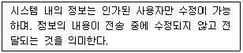
- 무결성
- 기밀성
- 가용성
- 인증
(정답률: 83%)
39. 네트워크 관리 구성 모델에서 관리를 실행하는 객체와 관리를 받는 객체를 올바르게 짝지은 것은?
- Agent-Manager
- Manager-Server
- Client-Agent
- Manager-Agent
(정답률: 79%)
40. 우리나라가 독자 개발한 대칭키 암호화 기술 중 국제 표준으로 채택된 기술은 무엇인가?
- SEED
- RSA
- DES
- RC4
(정답률: 84%)
3과목: 정보통신 기기
41. 처리된 자료를 문자나 도형으로 변환하여 마이크로필름에 기록하고 정보를 검색하는 장치는?
- 디지타이저
- CAD/CAM
- COM/CAR
- 마우스
(정답률: 67%)
42. 다음에서 설명하는 내용은 정보단말기의 어떤 기술을 설명한 것인가?
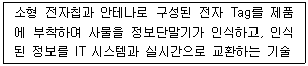
- IPTV
- PLC
- RFID
- HSDPA
(정답률: 92%)
43. 최단 펄스시간 길이가 1,000×10-6 [sec]일 때, 이 펄스의 변조속도는?
- 1[baud]
- 10[baud]
- 100[baud]
- 1,000[baud]
(정답률: 90%)
44. 컴퓨터가 어떤 터미널에 전송할 데이터가 있는 경우 터미널이 수신 준비가 되어 있는지를 묻고, 준비가 된 경우에 터미널로 데이터를 전송하는 것을 무엇이라 하는가?
- 폴링
- 셀렉션
- 링크
- 리퀘스트
(정답률: 79%)
45. 다음은 정보통신 네트워크의 장치에 관한 설명이다. 그 중 라우터에 해당 되는 것은?
- 복수개의 네트워크를 연결하는데 사용하는 장치이다.
- 데이터의 송·수신처리를 담당하는 장치이다.
- 데이터 송·수신과정에서 패킷으로 조립하거나 분해하는 장치이다.
- 양측 단말기간 링크조건을 설정하는 장치이다.
(정답률: 78%)
46. xDSL에서 사용되는 변조방식인 DMT의 장점이 아닌 것은?
- 회선상태에 따라 다양한 속도를 지원한다.
- 주파수를 독립적으로 운용하여 초기 모뎀간의 각 구간마다 전송파워의 범위를 정할 수 있다.
- 회선의 잡음이 특정대역에 영향을 줄 경우에는 그 대역에서 통신이 가능한 QAM 크기를 적용하여 최대의 통신속도 제공이 가능하다.
- 초기 모뎀간의 설정시간이 짧고 오류 검사가 간편하다.
(정답률: 68%)
47. 다음 중 ITU X 계열 권고내용으로 틀린 것은?
- X.20 : 공중데이터망에서 비 동기전송을 위한 DTE/DCE간의 접속규격
- X.21 : 공중데이터망에서 동기전송을 위한 DTE/DCE간의 접속규격
- X.24 : 공중데이터망에서 사용되는 DTE/DCE간의 상호접속회로에 대한 정의
- X.28 : 불평형 복류 상호접속회로의 전기적 특성
(정답률: 74%)
48. 다음 중 WAN을 구성하기 위한 패킷교환의 설명으로 옳지 않은 것은?
- 데이터그램의 접근 방법은 네트워크층의 기술이다.
- 가상회선 접근 방법은 데이터링크층의 기술이다.
- 가상회선을 위한 원거리 네트워크는 송신지에서 목적지의 트랙픽을 전달하는 교환기가 있다.
- 가상회선은 송신자에서만 전역 주소(Global Addressing)가 필요하다.
(정답률: 79%)
49. 다음 중 전화기의 기본 구성이 아닌 것은?
- 통화 회로
- 신호 회로
- 송수신 공용회로
- 측음 방지회로
(정답률: 69%)
50. 무선 이어폰은 전화기를 호주머니나 가방에 넣어 둔 채로 전화를 걸거나 받을 수 있고, 음악도 들을 수 있다. 이와 같이 근거리에서 2.4[GHz] 주파수 대역을 이용하여 휴대기기 간 연결을 도와주는 기술은 무엇인가?
- Bluetooth
- Zigbee
- NFC
- RFID
(정답률: 93%)
51. 팩시밀리의 원통직경이 50[mm]이고, 주사선 밀도가 5[선/mm]일 때 협동계수는 얼마인가?
- 10
- 25
- 100
- 250
(정답률: 78%)
52. 다음 중 멀티미디어를 기반으로 하는 응용으로 대화형(Dialogue) 응용에 관한 설명으로 옳지 않은 것은?
- 응용분야는 화상 전화, 화상 회의 등이다.
- 생성된 멀티미디어 데이터가 일정 시간 내에 전송되어야 한다.
- 데이터의 압축과 복원이 동시에 이루어져야 한다.
- 비대칭(Asymmetric) 멀티미디어 응용이다.
(정답률: 80%)
53. 다음 중 CATV망 구성으로 적합하지 않은 것은?
- Star형
- Mesh형
- Tree and Branch형
- Switch Star형
(정답률: 76%)
54. FM에 있어서 변조신호의 높은 주파수대역을 강하게 변조하여 S/N비의 저하를 방지하는 회로는?
- 디엠파시스 회로
- 프리엠파시스 회로
- AFC 회로
- AGC 회로
(정답률: 65%)
55. 다음 중 CDMA(IS-95A기준) 이동통신망에서 BTS로부터 받은 신호를 MSC로 전달해 주는 장비는 어느 것인가?
- HLR
- PDGN
- JWF
- BSC
(정답률: 73%)
56. 이동통신시스템에서 단말기가 이동교환기 내에 있는 기지국에서 통화의 단절 없이 동일한 주파수를 사용하는 다른 기지국으로 옮겨 통화하는 경우에 해당되는 Handoff는?
- Hard Handoff
- Soft Handoff
- Dual Handoff
- Softer Handoff
(정답률: 79%)
57. 다음 중 양안시차, 폭주(Vergence)를 이용하는 방식의 TV는?
- HDTV
- SDTV
- 3DTV
- IPTV
(정답률: 87%)
58. 비디오텍스에서 직선, 원호, 및 다각형 등의 기하학적 형상을 가진 도형 요소를 사용하여 부호화 하는 방식은?
- 알파 포토그래픽 방식
- 알파 지오메트릭 방식
- 알파 모자이크 방식
- 알파 캐릭터 방식
(정답률: 84%)
59. 휴대전화에 인터넷 통신과 정보검색 등 컴퓨터 지원 기능을 추가한 지능형 단말기로 사용자가 원하는 애플리케이션을 설치할 수 있는 멀티미디어 기기는 무엇인가?
- Tablet PC
- PDA
- Smart Phone
- Smart Grid
(정답률: 91%)
60. Full HD(1,920 × 1,080화소) TV방송보다 4배 이상 화질이 선명한 '4K급 초고화질'TV방송 및 실물에 가까운 생생한 화질을 제공하는 멀티미디어 기기는 무엇인가?
- 3DTV
- Smart TV
- UHD TV
- IPTV
(정답률: 92%)
4과목: 정보전송 공학
61. 다음 중 엘리에싱(Aliasing)현상이 발생하는 원인으로 알맞은 것은?
- 나이퀴스트 주파수보다 높게 하여 표본화할 경우 발생한다.
- 나이퀴스트 주파수보다 낮게 하여 표본화 할 경우 발생한다.
- 나이퀴스트 주파수로 표본화 했을 경우 발생한다.
- 나이퀴스트 주기보다 짧게 하여 표본화할 경우에 발생한다.
(정답률: 82%)
62. 신호의 전압이 V(t) = 4 + 5cos20πt + 3sin20πt이고, 저항이 1[Ω]일 때 평균전력은 몇 [W]인가?
- 23[W]
- 33[W]
- 43[W]
- 53[W]
(정답률: 68%)
63. TDM을 사용하여 5개의 채널을 다중화 한다. 각 채널이 100[byte/s]의 속도로 전송하고 각 채널마다 2[byte]씩 다중화 하는 경우 초당 전송해야 하는 프레임수와 비트 전송률[bps]은 각각 얼마인가?
- 50개, 2,000[bps]
- 50개, 4,000[bps]
- 100개, 2,000[bps]
- 100개, 4,000[bps]
(정답률: 71%)
64. 다음 중 CDMA 방식의 특징으로 거리가 먼 것은?
- 아날로그 방식보다 10~15배 정도의 용량을 증가시킬 수 있다.
- 통화에 대한 비밀이 보장된다.
- 여러 가지 다이버시티를 사용하여 페이딩의 최대화로 통화 품질이 양호하다.
- 전력제어를 통해 간섭을 극복하므로 회선 품질을 좋게 한다.
(정답률: 51%)
65. 전송선로의 2차 정수 α와 β는 고주파에서 어떤 특성을 나타내는가?
- α와 β가 모두 √f에 비례
- α는 √f에 비례하고 β는 f에 비례
- α는 f에 비례하고 β는 √f에 비례
- α와 β가 모두 f에 비례
(정답률: 76%)
66. 최대 전송률을 예상할 수 있는 나이퀴스트(Nyquist) 공식으로 맞는 것은? (단, C는 채널용량, B는 전송채널의 대역폭, M은 진수, S/N은 신호 대 잡음비)
- C = B × log2(M)
- C = 2 × B × log2(M)
- C = B × log2(M × 1 + S/N)
- C = 2 × B × log2(M × 1 + S/N)
(정답률: 84%)
67. 다음 중 광통신에 사용되는 레이저의 특징으로 틀린 것은?
- 간섭성이 좋다.
- 매우 순수한 단색광을 방출한다.
- 단위면적당 출력이 매우 강하다.
- 직진성이 약하다.
(정답률: 89%)
68. 다음 중 DS CDMA에 대한 설명으로 틀린 것은?
- 원근단 간섭문제를 해결해야 성능이 향상된다.
- 상호상관함수의 값이 클수록 좋은 성능이 얻어진다.
- 사용자 상호간에 직교성을 가진 확산부호를 사용한다.
- 주파수 사용효율이 높다.
(정답률: 69%)
69. 100[mV]는 몇 [dBmV]인가? (단, 1[mV]는 0[dBmV]이다.)
- 10[dBmV]
- 20[dBmV]
- 30[dBmV]
- 40[dBmV]
(정답률: 68%)
70. 다음 중 플래그(Flag) 동기방식의 설명으로 맞는 것은?
- BSC 또는 Basic Protocol에서 사용한다.
- SDLC 또는 HDLC Protocol에서 사용한다.
- 각 비트의 위치를 맞추는 방식으로 디지트 동기 방식이다.
- 데이터는 문자 단위로 전송하며 동기를 유지한다.
(정답률: 54%)
71. 다음 중 HDLC 프레임 구조에서 FCS의 비트수는?
- 6
- 12
- 16
- 24
(정답률: 66%)
72. 플래그 동기방식에서 비트스터핑(Bit Stuffing)을 행하는 목적은?
- 프레임 검사 시퀀스의 구분
- 데이터의 투명성 보장
- 정보부 암호화
- 데이터 변환
(정답률: 71%)
73. 기저대역(Baseband) 전송에서 대역폭이 100[kHz]인 저대역 통과채널이 있다. 이 채널의 최대 비트율은 얼마인가?
- 100[kbps]
- 200[kbps]
- 300[kbps]
- 400[kbps]
(정답률: 68%)
74. 다음 중 브로드캐스트 주소(Broadcast Address)에 대한 설명으로 알맞은 것은?
- 데이터를 보낼 때 특정 노드에게만 데이터를 보낸다.
- 네트워크 주소에서 호스트의 비트가 모두 1인 주소이다.
- 네트워크 검사용으로 예약된 주소이다.
- 호스트 식별자에 127를 붙여서 사용한다.
(정답률: 77%)
75. 다음 중 IP 주소의 Class에 대한 설명으로 잘못된 것은?
- Class A는 첫 번째 바이트의 첫 비트가 0으로 시작한다.
- Class B의 가용 호스트 수는 65,534개이다.
- Class C는 가장 많은 네트워크를 수용할 수 있다.
- Class D는 127로 시작하는 Loopback 주소로 사용된다.
(정답률: 62%)
76. 다음 중 IP의 특성이 아닌 것은?
- 비접속형
- 신뢰성
- 주소 지정
- 경로 설정
(정답률: 79%)
77. 다중 VLAN을 ATM과 연결할 때 사용하는 트렁킹 방법은?
- ISL(Inter-Switch Link)
- LANE
- SAID
- 802.1q
(정답률: 63%)
78. 다음 중 패리티 검사(Parity Check)를 하는 이유는 무엇인가?
- 수신정보내의 오류 검출
- 전송되는 부호의 용량 검사
- 전송데이터의 처리량 측정
- 통신 프로토콜의 성능 측정
(정답률: 92%)
79. 전송하려는 부호어들의 최소 해밍거리가 6일 때 수신 시 정정할 수 있는 최대 오류의 수는?
- 1
- 2
- 3
- 6
(정답률: 68%)
80. 전송제어 프로토콜 중 BASIC 프로토콜의 BCC 체크범위가 아닌 것은?
- STX
- SOH
- ETX
- Text
(정답률: 59%)
5과목: 전자계산기일반 및 정보통신설비기준
81. 다음 중 CPU의 개입 없이 메모리와 주변장치 간에 데이터를 전달할 수 있는 것은?
- 인터럽트(Interrupt)
- 스풀링(Spooling)
- 버퍼링(Buffering)
- DMA(Direct Memory Access)
(정답률: 77%)
82. 다음 중 플립플롭(Flip-Flop) 회로를 사용하여 만들어진 메모리는?
- DRAM(Dynamic Random Access Memory)
- SRAM(Static Random Access Memory)
- ROM(Read Only Memory)
- BIOS(Basic Input Output System)
(정답률: 64%)
83. 10진수 -593을 10의 보수와 2의 보수로 옳게 표현한 것은? (단, 10의 보수는 5자리수, 양부호는 0, 음부호는 9로 표현하고, 2의 보수는 12비트, 양부호는 0, 음부호는 1로 표현한다.)(오류 신고가 접수된 문제입니다. 반드시 정답과 해설을 확인하시기 바랍니다.)
- 10의 보수 : 99406, 2의 보수: 110110101110
- 10의 보수 : 99406, 2의 보수: 110110101111
- 10의 보수 : 99407, 2의 보수: 110110101110
- 10의 보수 : 99407, 2의 보수: 110110101111
(정답률: 53%)
84. 다음 중 제일 먼저 삽입된 데이터가 제일 먼저 출력되는 파일구조는?
- 스택(Stack)
- 큐(Queue)
- 리스트(List)
- 트리(tree)
(정답률: 78%)
85. 메모리관리에서 빈 공간을 관리하는 Free 리스트를 끝까지 탐색하여 요구되는 크기보다 더 크되, 그 차이가 제일 작은 노드를 찾아 할당 해주는 방법은?
- 최초적합(First-Fit)
- 최적적합(Best-Fit)
- 최악적합(Worst-Fit)
- 최후적합(Last-Fit)
(정답률: 87%)
86. 다음 중 분산 처리 시스템에 대한 설명으로 틀린 것은?
- 중앙집중형시스템 개념과는 반대되는 시스템이다.
- 한 업무를 여러 컴퓨터로 작업을 분담시킴으로써 처리량을 높일 수 있다.
- 보안성이 매우 높다.
- 업무량 증가에 따른 점진적인 확장이 용이하다.
(정답률: 88%)
87. 다음 중 기계어로 번역된 프로그램은?
- 목적 프로그램(Object Program)
- 원시 프로그램(Source Program)
- 컴파일러(Compiler)
- 로더(Loader)
(정답률: 74%)
88. 다음 중 오퍼레이팅 시스템에서 제어 프로그램에 속하는 것은?
- 데이터 관리프로그램
- 어셈블러
- 컴파일러
- 서브루틴
(정답률: 74%)
89. 다음 중 레지스터에 대한 설명으로 틀린 것은?
- 레지스터는 프로세서 내부에 위치한 저장소(Storage)이다.
- 누산기(Accumulator)는 레지스터의 일종이다.
- 특정한 주소를 지정하기 위한 레지스터를 상태(Status) 레지스터라 부른다.
- 레지스터는 실행과정에서 연산결과를 일시적으로 기억하는 회로이다.
(정답률: 73%)
90. 다음 설명으로 옳은 주소 지정방식은?
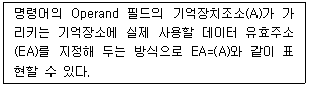
- 즉시 주소 지정방식
- 집접 주소 지정방식
- 변위 주소 지정방식
- 간접 주소 지정방식
(정답률: 66%)
91. 방송통신서비스를 제공받기 위하여 이용자가 관리·사용하는 구내통신선로설비, 이동통신구내선로설비, 방송공동수신설비, 단말장치 및 전송설비 등을 무엇이라고 하는가?
- 국선접속설비
- 사업용 전기통신설비
- 이용자방송통신설비
- 자가전기통신설비
(정답률: 75%)
92. 일정한 형태의 방송통신콘텐츠를 전송하기 위하여 사용하는 동선·광섬유 등의 전송매체로 제작된 선조·케이블 등과 이를 수용 또는 접속하기 위하여 제작된 전주·관로·통신터널·배관·맨홀·핸드홀·배선반 등과 그 부대설비를 무엇이라 하는가?
- 교환설비
- 구내설비
- 선로설비
- 전송설비
(정답률: 62%)
93. 방송통신설비의 설치 및 보전은 무엇에 따라 하여야 하는가?
- 설계도서
- 프로토콜
- 전기통신기술기준
- 정보통신공사업법
(정답률: 66%)
94. 방송통신설비가 이에 접속되는 다른 방송통신설비의 위해 등을 방지하기 위한 대책으로 적합하지 않은 것은?
- 전력선통신을 행하는 방송통신설비는 이상전압이나 이상전류에 대한 방지대책이 요구되지 않는다.
- 다른 방송통신설비를 손상시킬 우려가 있는 전류가 송출되는 것이어서는 아니 된다.
- 다른 방송통신설비의 기능에 지장을 주는 방송통신콘텐츠가 송출되어서는 아니 된다.
- 다른 방송통신설비를 손상시킬 우려가 있는 전압이 송출되는 것이어서는 아니 된다.
(정답률: 83%)
95. 과학기술정보통신부장관이 정보통신서비스 제공자에게 정보통신서비스 제공에 사용되는 정보통신망의 안전성 및 정보의 신뢰성을 확보하기 위한 보호조치의 구체적인 내용을 정하여 고시하는 것을 무엇이라 하는가?
- 정보보호지침
- 정보의 신뢰성 기준
- 정보통신망 안정기준
- 정보통신서비스준칙
(정답률: 62%)
96. 다음 중 전기통신설비를 이용하여 타인의 통신을 매개하거나 전기통신설비를 타인의 통신용으로 제공하는 것을 무엇이라 하는가?
- 정보통신 서비스
- 전기통신 서비스
- 전기통신 역무
- 정보통신 역무
(정답률: 71%)
97. 다음 중 별정통신사업의 등록요건이 아닌 것은?
- 납입자본금 등 재정적 능력
- 기술방식 및 기술인력 등 기술적 능력
- 이용자 보호계획
- 정보통신자원 관리계획
(정답률: 51%)
98. 다음 중 보편적 역무를 제공하는 전기통신사업자를 지정할 때 고려하는 사항이 아닌 것은?
- 정보통신기술의 발전 정도
- 전기통신사업자의 기술적 능력
- 제공할 보편적 역무의 요금수준
- 제공할 보편적 역무의 사업규모 및 품질
(정답률: 58%)
99. 정보통신공사업법에서 정하는 용어의 정의로 옳지 않은 것은?
- '정보통신설비'란 유선, 무선, 광선, 그 밖의 전자적 방식으로 정보를 저장·제어·처리하거나 송수신하기 위한 설비를 말한다.
- '설계'란 공사에 관한 계획서, 설계도면, 시방서(示方書), 공사비명세서, 기술계산서 및 이와 관련된 서류를 작성하는 행위를 말한다.
- '용역'이란 다른 사람의 위탁을 받아 공사에 관한 조사, 설계, 감리, 사업관리 및 유지관리 등의 역무를 하는 것을 말한다.
- '감리'란 품질관리·시공관리에 대한 지도 등에 관한 시공자의 권한을 대행하는 것을 말한다.
(정답률: 65%)
100. 다음 중 감리원이 공사업자가 설계도서 및 관련 규정의 내용에 적합하지 아니하게 공사를 시공하는 경우 취할 수 있는 조치는 무엇인가?
- 하도급인과 협의하여 설계변경 명령을 할 수 있다.
- 발주자의 동의를 얻어 공사중지 명령을 할 수 있다.
- 수급인에게 보고하고 공사업자를 교체할 수 있다.
- 한국정보통신공사협회에 신고하고 공사업자에 과태료를 부과한다.
(정답률: 77%)